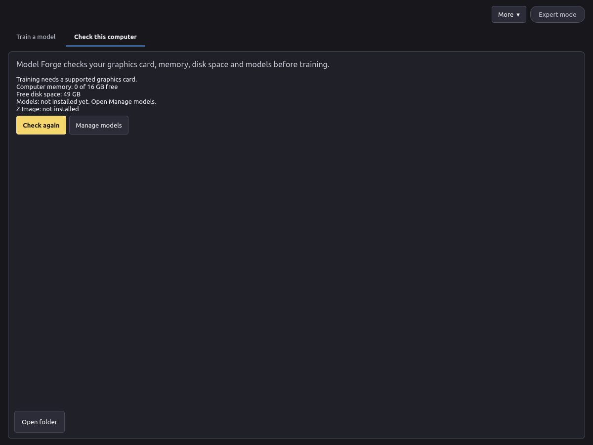
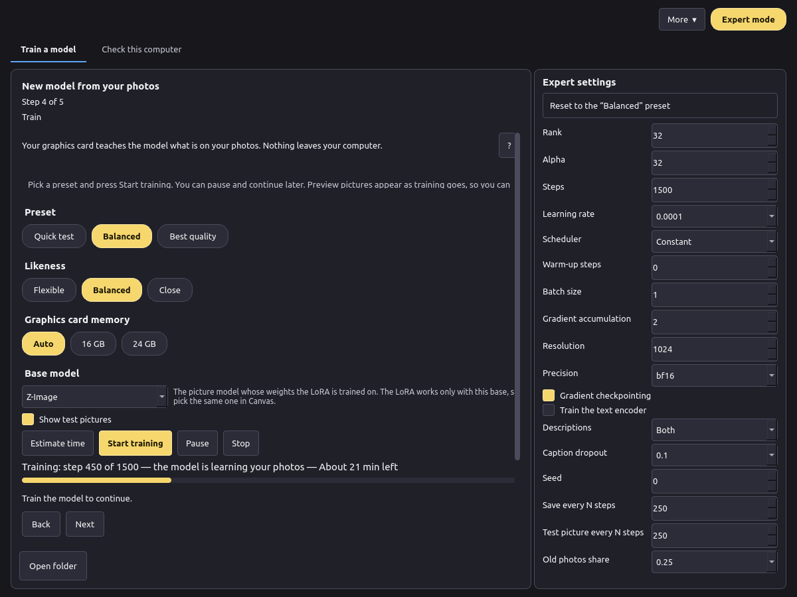
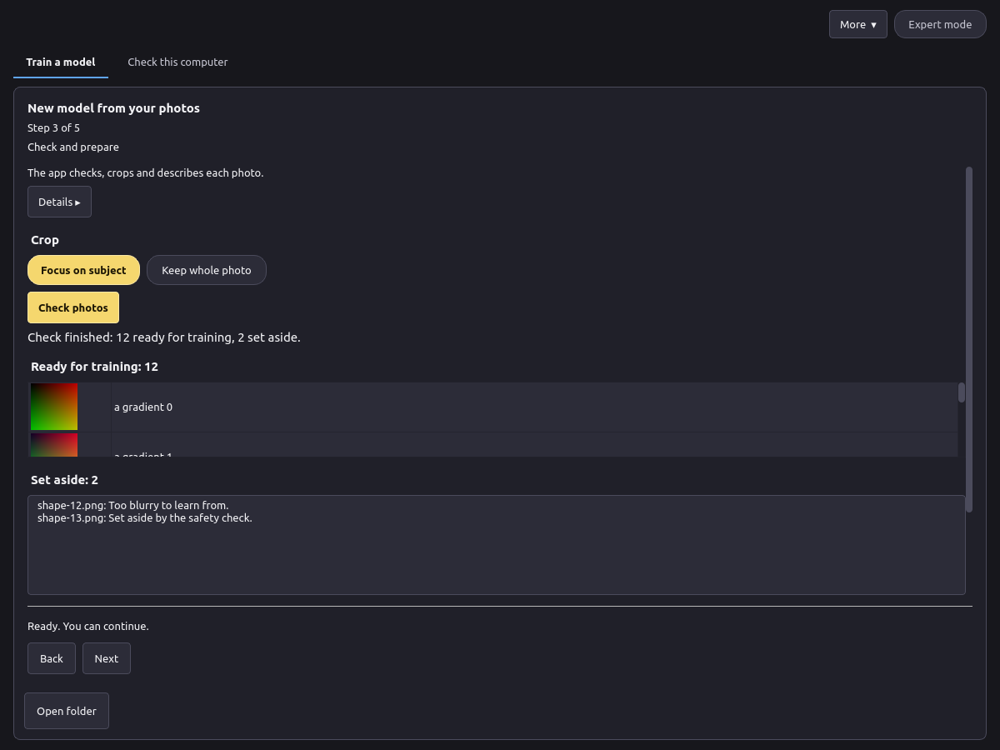
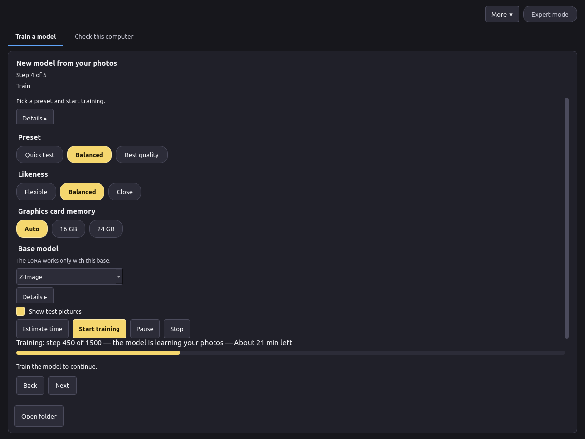
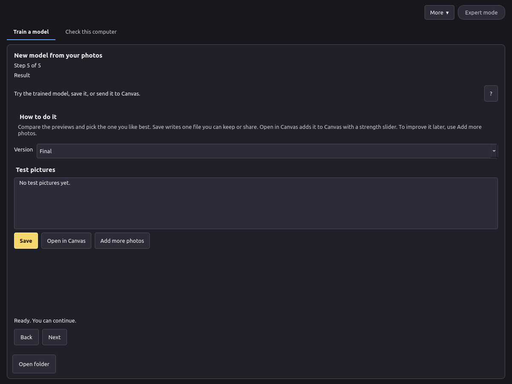

Version 0.1. Русская версия.
Pictures marked Screenshot placeholder will be added later.
Model Forge teaches a picture model something new from your own photos: a person, an object or a style. The result is a small add-on file called a LoRA. You can use it in VOXPrint AI Canvas to make new pictures of that person, object or style.
Everything happens on your computer. Your photos, the descriptions and the trained model are not uploaded anywhere.
Model Forge has a few more tools for advanced users (model conversion, measurements). This manual covers training a LoRA.
Requirements
| Minimum | |
|---|---|
| System | Windows 11 24H2 or newer, 64-bit. Linux works from source (see the README). |
| Graphics card | NVIDIA with 16 GB of video memory (24 GB is faster), RTX 30-series or newer |
| Driver | A current NVIDIA driver |
| Disk | About 45 GB free: about 35 GB for the models, plus the app and your projects |
| Internet | Needed for the install and the first model download only |
The figures for memory and time will be updated after the final GPU tests.
Install on Windows
VoxprintModelForgeSetup.exe and confirm the administrator prompt.C:\Program Files\VOXPrint AI Suite\Model Forge, then downloads Python and the libraries it needs. This takes a few minutes. Keep the computer online.If the setup fails, it shows the path to its log: C:\Program Files\VOXPrint AI Suite\Model Forge\setup-work\install.log.
Screenshot placeholder: the setup window while it installs.
To remove the app, use Uninstall VOXPrint AI Model Forge in the same Start menu folder, or Windows Settings. Your projects and downloaded models stay in place (see section 7).
Model Forge needs some models before it can train. They are not inside the setup, so it stays small. On the first launch, open Check this computer and press Manage models. The VOXPrint model downloader (MDL) opens and lists what is missing.

| Model | What it does | Source | Licence | Size |
|---|---|---|---|---|
| Z-Image (base) | The picture model the LoRA is trained on | Tongyi-MAI/Z-Image | Apache-2.0 | 20.5 GB |
| Qwen3-VL-4B-Instruct | Writes photo descriptions and checks every photo | Qwen/Qwen3-VL-4B-Instruct | Apache-2.0 | 8.9 GB |
| MiVOLO v2 | Estimates age from faces (safety check) | iitolstykh/mivolo_v2 | Apache-2.0 | 0.1 GB |
| YuNet (2023mar) | Finds faces for the age check | opencv/opencv_zoo | MIT | under 1 MB |
| Florence-2-large | Backup description writer | microsoft/Florence-2-large | MIT | 3.1 GB |
| MOSS-Image Base | A second base model (optional, coming later) | OpenMOSS-Team/MOSS-Image-Base | Apache-2.0 | 27.2 GB |
%LOCALAPPDATA%\Voxprint\models. Other VOXPrint apps use the same folder, so a model is downloaded only once. Downloads continue in the background if you close the downloader window, and they resume after an interruption.Screenshot placeholder: Manage models with the Model Forge models.

The safety check (section 5.3) works the same in both modes. Expert mode has no safety settings.
Start with More → New model. The steps are shown at the top of the window (Step 1 of 5 … Step 5 of 5). The ? button shows or hides the help for each step.
Good photos make a good model:

Enter a Name or a Stage name (one is enough). The Trigger word is the word you will later type in Canvas to call the model; the app suggests one.
Train only on people who agreed to it, and only on photos you have the right to use.
Model Forge never trains on minors. On every photo of every kind, two independent checks run before training:
A photo is used only if both checks agree that every visible person is clearly an adult (read as 20 or older). If either check is unsure, the photo is set aside with the reason "Set aside by the safety check". If a check finds a clear sign of a minor, the whole project is blocked. If the check models are not installed, preparation does not start.
This check is always on. The checkboxes in step 2 do not change it, and there is no setting to turn it off. Some photos of adults are set aside too, for example a young-looking face, a face that is small or turned away, or poor light. This is on purpose: the check would rather drop a good photo than let a doubtful one through. Replace dropped photos with clearer ones of the same person.
Photos can also be set aside because they are unreadable, too small, too blurry or almost the same as another photo.

Press Check photos. The app checks each photo, crops it (Focus on subject or Keep whole photo) and writes a short description of it. The trigger word is added to every description, so the model links the word to your subject.
You can read the crops, the descriptions and the reasons for set-aside photos, and remove any photo before training.

Press Estimate time for a forecast, then Start training. The bar shows the step, what is happening and the time left (after the first few steps).

.safetensors file with its description file (voxprint-model.json), licence and notice. You can keep it or share it under the base model's licence.Screenshot placeholder: the LoRA in Canvas with the strength slider.
To improve a model later, press Add more photos on this step. Training continues from the model with the new photos and a share of the old ones.
%LOCALAPPDATA%\Voxprint\models\user-models\lora\<name>\.%LOCALAPPDATA%\Voxprint\state\model-forge\lora\. Deleting a project folder removes its photos, descriptions and versions. Saved LoRA files elsewhere are not affected.Screenshot placeholder: Manage models, installed models.
%LOCALAPPDATA%\Voxprint\state\model-forge and, if no other VOXPrint app uses them, the models in %LOCALAPPDATA%\Voxprint\models.| What you see | What to do |
|---|---|
| "Training needs a supported graphics card" | Use a computer with an NVIDIA card with 16 GB or more and a current driver. |
| "Models: not installed yet" | Press Manage models and download the missing models. |
| "The safety check is not available, so training cannot start" | Download Qwen3-VL-4B-Instruct, MiVOLO v2 and YuNet in Manage models. |
| "Add at least N more photos" | Many photos were set aside. Add clearer photos (section 5.3) or use Expert mode (minimum 5). |
| "These photos cannot be used for training" (the project is blocked) | A check found a sign of a minor. This cannot be overridden. Start a new project with different photos. |
| "A PAUSE file is still in the project folder" | Press Start training again in the app. If it repeats, delete the file named PAUSE in the project folder. |
| Out of video memory | Choose 16 GB under Graphics card memory, close other programs that use the graphics card, and try again. |
| Not enough disk space | Free space on the drive that holds %LOCALAPPDATA%\Voxprint, or remove models you no longer need in Manage models. |
| The setup failed | Read C:\Program Files\VOXPrint AI Suite\Model Forge\setup-work\install.log, check the internet connection and run the setup again. |
| Test pictures do not look like the subject | Use Close likeness or Best quality, add more varied photos, or choose a later version. |
| Every picture looks the same as the photos | Use Flexible likeness or an earlier version, and add more variety to the photos. |
Can I train on photos of someone I found online? No. Train only on people who agreed to it and on photos you have the right to use.
Can I switch off the age check? No. It is always on, in every mode.
Why were good photos set aside? The check drops any photo it is unsure about. See section 5.3.
Does anything leave my computer? No. Only the model downloads come from the internet.
Can I use the LoRA commercially? The LoRA follows the licence of its base model. Z-Image is Apache-2.0. You are also responsible for the rights to the photos and the consent of the people in them.
Can I continue training later? Yes. Pause and continue, or use Add more photos on a finished model.
Licences
| Component | Licence |
|---|---|
| VOXPrint AI Model Forge | Apache-2.0 |
| Z-Image | Apache-2.0 |
| MOSS-Image Base | Apache-2.0 |
| Qwen3-VL-4B-Instruct | Apache-2.0 |
| Florence-2-large | MIT |
| MiVOLO v2 | Apache-2.0 |
| YuNet | MIT |
The full licence texts come with each model and are listed in Manage models. The app's own notice is in LICENSE and NOTICE in the install folder.